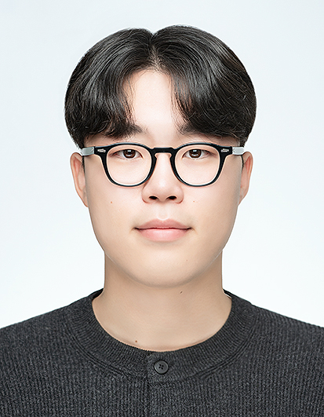

SangEun Park
Ph.D. Student in Electrical Engineering and Computer Science
HASS Lab , DGIST
I am a Ph.D. student at DGIST, advised by Prof. BaekGyu Kim. My research interests include vehicular edge computing, real-time systems and scheduling, and formal verification.

Research Interests
Vehicular Edge Computing · Real-Time Systems and Scheduling · Formal Verification · Task Offloading
Education
Daegu Gyeongbuk Institute of Science and Technology (DGIST)
HASS Lab · Advisor: Prof. BaekGyu Kim
Daegu Gyeongbuk Institute of Science and Technology (DGIST)
GPA: 3.9 / 4.3